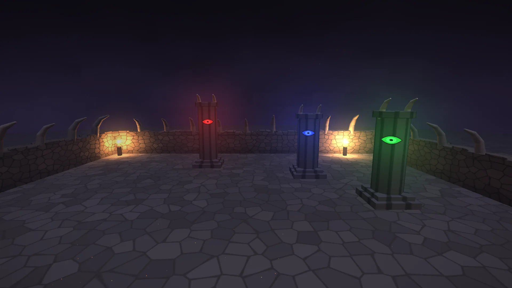

Cyclops Arena
Cyclops Arena is a region of the Endless Dungeon. The cyclops brothers' pit.
In the Endless Dungeon
A tier 4 region of Greenshore. It opens when you clear it in the Greenshore Story.
Who you fight
| Enemy | Role | Share of ordinary fights |
|---|---|---|
| Super Zombie | Ordinary fight | 66.67% |
| Bandit Elite | Ordinary fight | 33.33% |
| Punchy | Round boss, Warden | — |
| Shooty | Round boss, Warden | — |
| Bernie | Round boss, Warden | — |
Region chest
Its chests pay tier 2 or better, with one extra row from this list:
| Item | Quantity | Share |
|---|---|---|
 Eye Ball Eye Ball | 3–6 | 50% |
 Rough Leather Rough Leather | 2–4 | 32% |
 Punchy's Skin Punchy's Skin | 1 | 6% |
 Shooty's Skin Shooty's Skin | 1 | 6% |
 Bernie's Skin Bernie's Skin | 1 | 6% |
Chart
 Cyclops Chart takes a run straight here.
Cyclops Chart takes a run straight here.
Diary
Its tasks, Easy to Elite: Cyclops Arena Diary.
Strategy
Not written yet
How to get through Cyclops Arena, and what to bring.
Gallery


Trivia
Not written yet
Anything else worth knowing.
Changes
Not written yet
What changed in Cyclops Arena, update by update.
| Locations | |
|---|---|
| Greenshore | Greenshore · Greenshore Fields · Bandit Camp · Bandit Town · Cyclops Arena · Cultist Tower · The Dump · Slime Grotto |
| The Red Desert | Dust Bowl · Sand Storm · Pyramids · Sand Cave · Research Station · Hellish Desert |